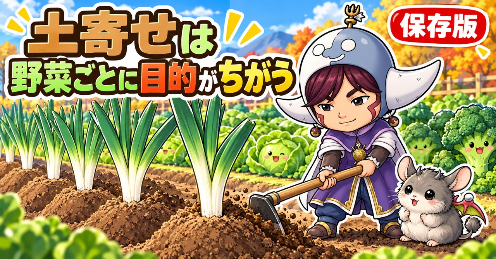
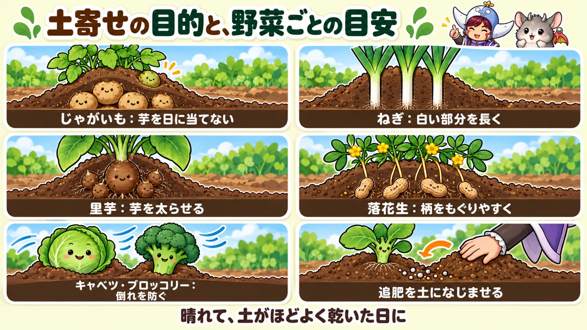
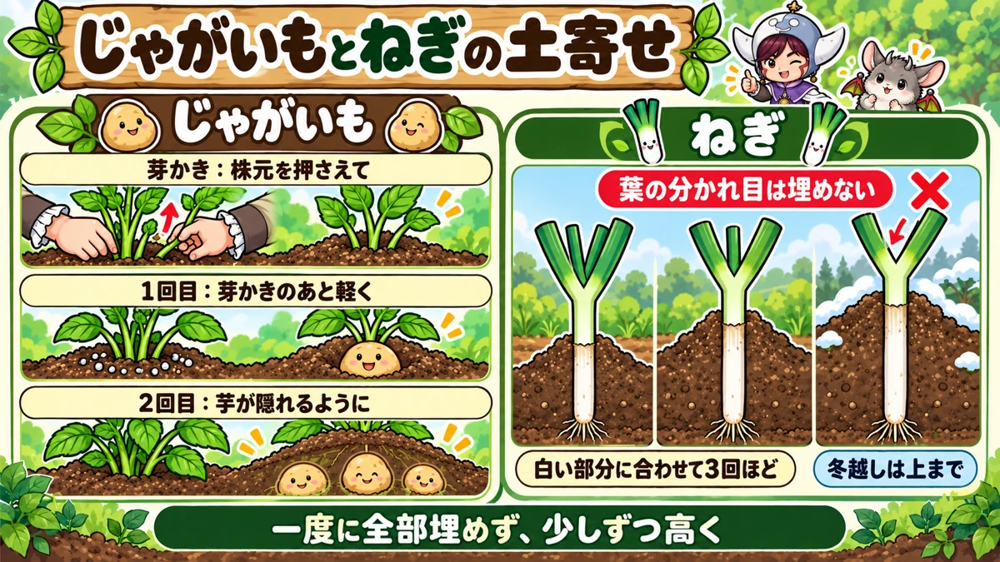
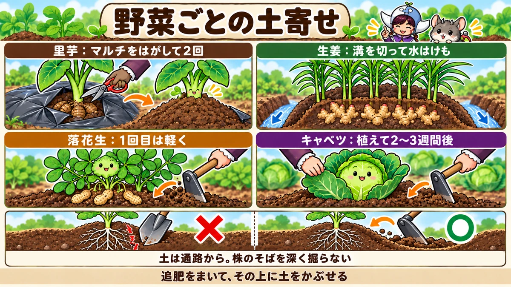

土寄せのやり方の決定版｜じゃがいも・ねぎ・里芋・生姜・落花生・キャベツ、野菜ごとの時期と回数と失敗しないこつ

📖 この記事の目次
この記事で分かること
- 土寄せは、株のまわりの土を、株元に寄せて盛り上げる作業です。追肥といっしょに行うことが多く、追肥した肥料の上に土をかぶせて、土になじませる役目もあります。
- 目的は野菜によってちがいます。株が倒れるのを防ぐ、芋に日が当たって緑になるのを防ぐ、ねぎの白い部分を長くする、芋の太る場所を作る、草を抑える、水はけをよくする、などです。
- じゃがいもは芽かきのあとに2回、ねぎは白い部分が伸びるのに合わせて3回ほど、里芋は追肥に合わせて2回、キャベツやブロッコリーは植えつけ2〜3週間後に1回、が目安です。
- ねぎは、葉の分かれ目を土で埋めないことがいちばん大切です。
- マルチをしていると、マルチの上に土を盛れません。マルチをはがしてから土寄せをするか、土寄せをしない育て方にするかを決めます。
- 土寄せは、晴れて土がほどよく乾いた日に。雨のあとのぬれた土では行いません。
じゃがいもの芋が、掘ってみたら緑色になっていた。ねぎを育てたのに、白い部分が短くて、ほとんど緑のねぎになってしまった。ブロッコリーが、台風のあとに根元から倒れていた。こうした失敗の多くは、土寄せのしかたやタイミングで防ぐことができます。
土寄せは、株元に土を寄せるだけの、シンプルな作業です。ところが、野菜によって、何のためにやるのか、いつやるのか、何回やるのかが、かなりちがいます。この記事では、土寄せの目的と基本の手順から、マルチをしているときの考え方、野菜ごとの時期と回数、よくある失敗まで、順番に書いていきます。
早見：土寄せの目的と、野菜ごとの目安
土寄せの6つの目的
- 株を支える：株元がしっかりして、風や重みで倒れにくくなる
- 日に当てない：芋が地表に出て、日に当たって緑色になるのを防ぐ
- 白い部分を作る：ねぎの茎に光を当てず、白く長く育てる
- 追肥をなじませる：まいた肥料の上に土をかぶせて、土の中で効かせる
- 草を抑える：株元に生えはじめた小さな草を、土で埋めてしまう
- 水はけをよくする：株元が盛り上がり、雨のあと水がたまりにくくなる
野菜ごとの目安
- じゃがいも：芽かきのあと1回目、その2〜3週間後に2回目。芋の緑化を防ぎ、芋の太る場所を作る
- ねぎ（白ねぎ）：白い部分が伸びるのに合わせて3回ほど。白い部分を長くする
- 里芋：追肥に合わせて2回。芋の緑化を防ぎ、太らせる
- 生姜：追肥に合わせて。新しい生姜が地表に出て緑になるのを防ぐ
- 落花生：1回目は追肥に合わせて軽く、2回目は花が咲いて、花のつけ根から伸びた柄が土に入るころ
- キャベツ、ブロッコリー、白菜：植えつけ2〜3週間後、1回目の追肥に合わせて。ぐらつきと倒れを防ぐ

土寄せの基本の手順
1. 天気と土の具合を見る
晴れて、土がほどよく乾いている日に行います。雨のあとのぬれた土は、寄せると固まってしまい、空気が通りにくくなります。からからに乾きすぎた土も、さらさらとくずれて、うまく盛れません。手でにぎると軽く固まり、指で押すとくずれるくらいが、ちょうどよい状態です。
2. 草を取る
株元や、寄せる土のあたりに生えている草を、先に取っておきます。小さな草なら、土寄せでそのまま埋めてしまってもかまいません。
3. 追肥をまく
追肥といっしょに土寄せをする場合は、先に肥料をまきます。肥料は株元に直接ではなく、株から少し離れたところに、株を囲むように円を描いてまきます。
4. 通路の土を寄せる
くわや、立ち鎌（土寄せ用の細いくわ）、移植ごてなどで、畝の肩や通路の土をすくい、株元へ寄せていきます。まいた肥料の上に土がかぶるように寄せると、肥料が土の中でゆっくり効きます。
5. 両側から寄せる
片側だけに寄せると、株が傾くことがあります。畝の両側から、同じくらいずつ寄せます。
6. 株元を軽く押さえる
寄せた土を、手やくわの背で軽く押さえて、落ち着かせます。強く踏み固める必要はありません。葉が広がっていて作業のじゃまになるときは、片手で葉を押さえながら寄せます。
道具の選びかた
- 平くわ：広い面積の土をまとめて寄せるときに
- 立ち鎌：株と株のあいだの細かいところや、株元のきわを寄せるときに
- 移植ごて：プランターや、株が少ないときに
- スコップ：ねぎの冬越しなど、たくさんの土を寄せるときに
追肥と組み合わせるときのこつ
肥料は、株を囲むように
追肥の肥料は、株元にまとめて置かず、株から少し離れたところに、株を囲むように円を描いてまきます。根は、株元から外側へ広がっているので、根の先の近くに肥料があると、よく吸われます。
肥料は、まいたら土で覆う
肥料を地表にまいたままにすると、雨で流れたり、効きが悪くなったりします。土寄せで肥料の上に土をかぶせると、肥料が土の中で溶け、根に届きやすくなります。混ぜこまなくても、上から土をのせるだけで十分です。
肥料の種類
家庭菜園では、鶏ふんや、ぼかし肥料、化成肥料などがよく使われます。量は、袋の表示を目安にします。マメ科の野菜（えだまめ、落花生など）は、窒素を控えめにします。
肥料をやるときは、水も
土が乾いているときに追肥をすると、肥料が溶けにくく、効きが遅れます。土が乾いているときは、追肥と土寄せのあとに、水をやっておくと、肥料が早く土になじみます。
土寄せのときの注意
根を傷めない
株のすぐ近くの土を深く掘ると、根を切ってしまいます。土は、株から少し離れたところ、通路や畝の肩から取ります。土寄せのたびに根を切ってしまうと、株が弱ります。
成長点を埋めない
新しい葉が出てくる中心（成長点）を土で埋めると、育ちが悪くなります。特にねぎは、葉の分かれ目を埋めないことが大切です。
一度にたくさん盛らない
一度に高く盛ると、株元が蒸れたり、土が崩れたりします。何回かに分けて、少しずつ高くしていきます。
ぬれた土で作業しない
雨のあとのぬれた土で作業すると、土が固まり、根のまわりに空気が通りにくくなります。晴れて、土がほどよく乾くまで待ちます。
土寄せと草取りを、いっしょにすませる
草は、小さいうちに
株元に生えた草は、小さいうちなら、土寄せの土でそのまま埋めてしまえます。大きくなってからだと、根が張って抜きにくくなり、抜くときに野菜の根まで傷めることがあります。土寄せの時期を、草取りの時期と考えて、まとめてすませると効率的です。
マルチをしない畑では、土寄せが草よけになる
落花生などをマルチなしで育てる場合、株元に土を寄せると、生えはじめの草が埋まって、草が抑えられます。マルチをしない畑では、土寄せは草対策としても大切な作業です。
マルチの植え穴の草
マルチをしていても、植え穴のところは土がむき出しなので、草が生えてきます。追肥のときに、植え穴の草も取っておきます。
土寄せのついでに見ておくこと
枯れた葉
ねぎや里芋は、株元に枯れた古い葉がたまります。土寄せの前に取り除いておくと、風通しがよくなり、病気の予防になります。
虫
- 里芋：大きな葉を食べるいも虫（セスジスズメの幼虫など）がつくことがあります。葉の裏を見て、見つけたら取り除きます
- ねぎ：黒い小さな虫（ネギアブラムシ）がついていたら、早めに取り除きます。葉に白い筋や点のような跡があるのは、小さなハエの幼虫（ハモグリバエ）などのしわざで、ねぎではあまり大きな影響はありません
水はけ
土寄せのときに、畝のまわりに水がたまりやすい場所がないかを見ます。生姜のように、水がたまると病気が出やすい野菜は、溝を切って水の通り道を作っておきます。
マルチをしているとき
マルチの上には土を盛れない
黒いマルチを張っていると、マルチの上から株元に土を寄せることはできません（マルチの上に土をのせても、根元の土とはつながらないため）。マルチをしている場合は、育て方を次のどちらかに決めます。
A. マルチをはがしてから土寄せをする
里芋などは、はじめはマルチで地温を上げ、草を抑え、乾燥を防いでおき、追肥と土寄せの時期になったらマルチをはがして、土寄せをする方法があります。マルチは、まわりから無理に引きはがすと、茎や葉を傷めるので、はさみで中央から切って外します。
B. マルチをしたまま、土寄せをしない
里芋は、マルチをしたまま最後まで育て、土寄せをしない方法でも育ちます。その場合、追肥は、マルチに移植ごてなどで穴をあけて、株から20cmほど離れたところに入れます。
じゃがいものマルチ栽培
じゃがいもをマルチで育てる場合は、芽が出たところのマルチに穴をあけて芽を出します。土寄せをしないかわりに、マルチが光をさえぎって、芋に日が当たるのを防ぎます。ただし、穴のまわりから光が入ると芋が緑になることがあるので、穴のまわりに土を少しのせておくと安心です。
生姜
生姜は、乾燥を防ぐためにマルチを残したまま育てることもあります。その場合は、株元のマルチの穴のところに、土をかけるようにします。
じゃがいもの土寄せ
なぜ必要か
じゃがいもの芋は、種芋より上の、土の中の茎から伸びた部分にできます。芋が太って地表に出てくると、日に当たって緑色になってしまいます。緑になった芋は、品質が落ち、えぐみのもとにもなるので、土寄せで芋が地表に出ないようにします。土寄せで株元の土を厚くすると、芋ができる場所も増えます。
芽かきをしてから
芽が10cmほどに伸びたら、芽かきをして、元気な芽を2〜3本残します。芽を抜くときは、種芋ごと抜けないよう、株元の土を手でしっかり押さえながら抜きます。芽かきがすんだら、追肥をして、1回目の土寄せをします。
1回目と2回目
- 1回目：芽かきと追肥のあと。株元に軽く土を寄せる
- 2回目：1回目の2〜3週間後。株が大きくなってきたら、もう一度、しっかり土を寄せる
一度に全部埋めない
芽が小さいうちに、一度に高く土を盛って茎を全部埋めてしまうと、育ちが悪くなります。株の育ちに合わせて、何回かに分けて少しずつ土をかけていくのが大切です。草丈15cmほどのころに1回目、もっと大きくなったら2回目、必要なら3回目、と考えます。
芽が出たころは、遅霜に注意
春じゃがいもの芽が出たばかりのころは、突然の寒い日に霜が降りると、芽が一晩で枯れてしまうことがあります。枯れると、新しい芽が出るまで待たなければならず、育ちが大きく遅れます。一般的な地域では4月中旬ごろまで、芽の上に不織布を1枚かけておくと安心です。
マルチの下で芽がふくらんでいたら
穴をあけずにマルチを張っている場合、芽が出てくると、マルチが下から押されてふくらみます。ふくらみを見つけたら、指でマルチを破って、芽を外に出してあげます。そのままにすると、芽がマルチの下で蒸れて傷みます。
秋じゃがいも
秋じゃがいもも、芽が出そろったら芽かきをして、追肥と土寄せをします。1回目は軽く、株が育ってきたら2回目を行います。
ねぎの土寄せ
なぜ必要か
白ねぎ（長ねぎ）の白い部分は、土に埋まって光が当たらないことで、白く育ちます。土寄せをしないと、緑の部分が多い、白い部分の短いねぎになります。
時期と回数
白い部分が10cmほど伸びて見えてきたら、その部分を隠すように土を寄せます。これを、育ちに合わせて、収穫までに3回ほどくり返します。真夏の暑い時期は株が弱りやすいので、土寄せは控えめにし、涼しくなってきてから本格的に行います。11月ごろには、最後の土寄せをして、白い部分を仕上げます。
葉の分かれ目を埋めない
ねぎの土寄せでいちばん大切なのは、葉が分かれているところ（分岐点）を土で埋めないことです。ここを埋めると、育ちが悪くなったり、伸びなくなったりします。白い部分が隠れるくらいまでにとどめます。
追肥といっしょに
土寄せの前に、追肥をします。株の両側に、肥料をぱらぱらとまいてから、土を寄せてかぶせます。追肥は、植えつけから収穫まで、3回くらいで十分です。
枯れた葉を取ってから
土寄せの前に、株元の枯れた古い葉を取り除いておきます。取れる部分だけでかまいません。風通しがよくなり、病気の予防にもなります。
冬を越すねぎ
冬のあいだ畑に置いておくねぎは、寒さで凍るのを防ぐため、いつもより上のほうまで、たっぷり土を寄せておきます。何度も土を寄せていると、盛った土が崩れてくるので、くわやスコップで押さえながら寄せます。
土寄せをあまりしないねぎ
下仁田ねぎのように、太く短く育てるねぎは、白ねぎほど土寄せをしなくても育ちます。育てるねぎの種類に合わせて、土寄せの量を変えます。

里芋の土寄せ
なぜ必要か
里芋の子芋や孫芋は、親芋のまわりの、土の浅いところにできます。土寄せをしないと、芋が地表に出て緑になったり、えぐみが出たりします。株元に土を厚く盛ると、芋が太りやすくなります。
1回目
本葉が2〜3枚、草丈20〜30cmのころ（一般的な地域で6月ごろ）。株元に追肥をして、軽く土を寄せます。
2回目
本葉が5〜6枚のころ（一般的な地域で6月中旬〜7月上旬）。もう一度追肥をして、株元に厚さ10cmほどの土をしっかり寄せます。
わき芽はどうするか
育ちの途中で、株元からわき芽が出てくることがあります。土寄せのときに、土で埋めてしまう方法があります。
乾燥に注意
里芋は乾燥にとても弱い野菜です。土寄せのあと、晴れが続いて土が乾いているときは、たっぷり水をやります。
生姜の土寄せ
なぜ必要か
生姜は、育つにつれて、新しい生姜が土の表面近くにできてきます。地表に出て日に当たると、緑色になって品質が落ちます。土寄せをして、新しい生姜を土で覆います。肥料の効きもよくなります。
時期
芽が出そろったころに1回目の追肥をし、7月中旬〜下旬に2回目の追肥をします。2回目の追肥は遅くとも8月中にはすませます。追肥のあとに、株元に土を寄せます。
水はけの対策をかねて
生姜は、夏の大雨で根や芋が腐る病気（根茎腐敗病）が出やすい野菜です。土寄せのときに、畝のまわりに溝を切って、畝を高くしておくと、水はけがよくなり、病気の予防にもなります。
落花生の土寄せ
なぜ必要か
落花生は、花が咲いたあと、花のつけ根から柄が下へ伸びて、土の中にもぐり、そこでさやができる、めずらしい野菜です。株元の土がやわらかく盛り上がっていると、柄がもぐりやすく、さやがたくさんできます。土寄せは、地温を上げ、水はけをよくし、草を抑える役目もあります。
1回目
追肥といっしょに行います。肥料と土をよく混ぜるのが目的なので、軽くでかまいません。落花生はマメ科で、根に住む菌が空気中の窒素を取りこむので、窒素の肥料は控えめにします。かき殻などの石灰を、このときにまくこともあります。
2回目
花が咲いて、柄が土の中に伸びはじめるころに、もう一度、株元に土を寄せます。前の野菜の肥料が残っていて、葉がよく茂っている場合は、2回目の追肥はしなくてもかまいません。
キャベツ、ブロッコリー、白菜の土寄せ
なぜ必要か
苗が大きくなってくると、株元がぐらぐらしてきます。特にブロッコリーは、上のほうに大きな花のつぼみができるので、頭が重くなってバランスが悪くなります。土寄せで株元を安定させ、台風などの強い風で倒れないようにします。
追肥が先、土寄せがあと
秋に植えるキャベツやブロッコリーは、植えつけから2週間ほどで一気に葉を広げはじめます。この時期に追肥が遅れると、葉が大きくならず、キャベツの巻きはじめやブロッコリーのつぼみができるのも遅れます。追肥をして、その肥料を覆うように土寄せをする、という順番を守ります。
時期
植えつけてから2〜3週間後、1回目の追肥のときに、いっしょに土寄せをします。株元から少し離れたところに、円を描くように肥料をまき、その上に土をかぶせるように、株元へ寄せます。
株元をしっかり
葉が広がっている場合は、手で葉を押さえながら土を寄せ、株元にしっかり土がかぶるようにします。寄せたら、株元を軽く押さえて安定させます。土寄せのタイミングが遅れて、株がすでにぐらついている場合は、短い支柱を立てて支えます。

とうもろこしの土寄せ
なぜ必要か
とうもろこしは背が高くなり、実がつくと上のほうが重くなるので、風で倒れやすい野菜です。土寄せをして株元を安定させると、倒れにくくなります。株元の土に埋まった茎の部分からは、支えになる根が出てきます。
時期
苗がまだ小さいうちは、追肥のときに、株元に2〜3cmほど軽く土を盛ります。草丈が50cmほどになったら、2回目の追肥といっしょに、株元にしっかり土を寄せます。
草取りは、はさみで
とうもろこしは、根がまっすぐ深く伸びる野菜です。株元に大きくなった草を無理に引き抜くと、とうもろこしの根まで傷めてしまうことがあります。大きな草は、引き抜かずに、はさみで地際から切ります。
倒れてしまったら
とうもろこしは、倒れてもそのまま育つことが多い野菜です。無理に起こそうとして根を傷めるより、そのまま育てます。気になる場合は、株元に土を寄せて、根元を補強しておきます。
えだまめの土寄せ
育ちが悪いときに
えだまめの育ちが悪いとき、つい肥料を足したくなりますが、えだまめはマメ科で、肥料、特に窒素が多すぎると、葉ばかり茂って実がつきにくくなります。こういうときは、肥料を足すより、株元に土を寄せてあげる方法があります。土に埋まった茎から新しい根が出て、育ちを助けてくれることがあります。
倒れを防ぐ
えだまめも、実がたくさんついてくると、株が重くなって倒れやすくなります。花が咲くころまでに、株元に土を寄せておくと安心です。
さつまいもの土寄せ
芋が顔を出していたら
夏の終わりから秋にかけて、さつまいもの芋が太ってくると、土の表面に芋が顔を出してしまうことがあります。日に当たった部分は、品質が落ちます。見つけたら、芋が土の中に隠れるように、確実に土をかぶせます。茎に少し土がかぶってもかまいません。つるが伸びてくわが使いにくいときは、手で土を寄せます。
大根の土寄せ
首がぐらつくとき
大根は、育つにつれて、上の部分（首）が土の上に出てきます。間引きのあとや、苗がひょろひょろと伸びてぐらつくときは、株元に土を寄せて支えます。
2本育てて、1本先に抜いたとき
1か所に2本残して育てる方法では、先に1本を収穫すると、そこに穴があいて、残った大根の根がむき出しになります。収穫したあとは、必ず穴に土を寄せて、残った大根を覆っておきます。
追肥といっしょに
株間を狭めて育てる場合などは、追肥を2回行い、そのたびに肥料を畝の肩にまいて、管理機やくわで土寄せをすると、大きく育ちやすくなります。
玉ねぎの土寄せ
マルチを使わずに玉ねぎを植えた場合は、追肥のときに株元に軽く土を寄せます。マルチがないぶん、冬の寒さや霜柱で苗が浮きやすいので、株元の土をしっかりさせておきます。穴あきマルチで植えた場合は、土寄せはいりません。
大がかりな土寄せがいらない野菜
トマト、なす、ピーマン、きゅうり
支柱を立てて育てる夏野菜は、支柱で株を支えるので、大がかりな土寄せはしません。マルチを張って育てることも多い野菜です。マルチをしていない場合は、追肥のときに、肥料の上に軽く土をかぶせる程度で十分です。
葉物野菜
小松菜やほうれん草などの葉物は、育つ期間が短く、株も小さいので、間引きのあとに株元が不安定なら軽く土を寄せる程度で、土寄せはほとんどいりません。
にんじん
にんじんは、根の上の部分（肩）が土の上に出て日に当たると、緑色になることがあります。肩が見えてきたら、軽く土を寄せて覆っておくと、見た目よく育ちます。
野菜ごとの時期と回数（一般的な地域の目安）
- じゃがいも（春）：4月中旬〜5月。芽かきのあと1回目、2〜3週間後に2回目
- じゃがいも（秋）：9月下旬〜10月。芽かきのあと1回目、株が育ってから2回目
- 里芋：6月ごろに1回目、6月中旬〜7月上旬に2回目
- 生姜：芽が出そろったころと、7月中旬〜下旬
- 落花生：6月ごろに1回目、花が咲いて柄が伸びるころに2回目
- ねぎ：夏の終わり〜11月に、白い部分の伸びに合わせて3回ほど
- キャベツ、ブロッコリー、白菜：植えつけ2〜3週間後に1回
季節ごとにやること（一般的な地域の目安）
- 3〜4月：春じゃがいもの芽が出たら、芽かきと1回目の土寄せ。とうもろこしの苗に軽く土を盛る
- 5月：じゃがいもの2回目の土寄せ。落花生、生姜の芽が出そろったら追肥
- 6月：里芋の1回目、2回目の追肥と土寄せ。落花生の1回目。とうもろこしの2回目。えだまめの株元に土寄せ
- 7月：生姜の2回目の追肥と土寄せ（中旬〜下旬）。落花生の2回目（花が咲いて柄が伸びるころ）
- 8〜9月：さつまいもの芋が顔を出していたら土をかぶせる。秋植えのキャベツ、ブロッコリー、白菜は植えつけ2〜3週間後に土寄せ。ねぎは涼しくなってから本格的に
- 9〜10月：秋じゃがいもの芽かきと土寄せ。ねぎの土寄せ
- 11月：ねぎの最後の土寄せ。冬越しのねぎは上のほうまで土を寄せる
説明が分かれるところ
里芋に、土寄せは必要か
土寄せをしっかりして大きな山を作ったほうが、芋が大きくなる、という人がいます。一方で、マルチをしたまま土寄せをせずに育てても、十分に育つ、という人もいます。土寄せをすると、手間はかかりますが、芋の緑化を防ぎ、太りを助けます。マルチ栽培は、手間を減らし、乾燥を防げます。畑に通える回数や、手間のかけ方で選んでかまいません。
ねぎの土寄せを、楽にする方法
ねぎは、何度も土を寄せる手間がかかる野菜です。苗を斜めに寝かせて植えると、土寄せの手間を減らせる、という方法があります。また、深い入れ物で育てて、土寄せをせずに太いねぎを作る方法もあります。白い部分の長いまっすぐなねぎを作りたいなら、ふつうの土寄せが確実です。
じゃがいもの土寄せは、何回がよいか
1回で十分という人もいれば、2回以上という人もいます。芋が地表に出ないことが目的なので、芋が見えてきたら、その都度土を寄せれば、回数にこだわる必要はありません。
じゃがいもの芽かきは必要か
芽かきをして2〜3本に絞ると、1株あたりの芋の数は減りますが、ひとつひとつの芋が大きくそろいやすくなります。一方で、芽かきをしないと、茎の数が多いぶん芋の数が増え、大きさはばらつくものの、たくさん収穫できる、という考え方もあります。芽かきのときに、残す芽まで傷めてしまう心配もあります。大きな芋をそろえたいなら芽かきをし、数を楽しみたいなら芽かきをしない、と目的で選んでかまいません。
何cm盛ればよいか
土寄せの高さは、野菜や目的によってちがうので、決まった答えはありません。じゃがいもや里芋は芋が隠れること、ねぎは白い部分が隠れること、キャベツやブロッコリーは株元がぐらつかないこと、を目安にします。高く盛るほどよい、ということではなく、目的が果たせる高さで十分です。
よくある失敗
ねぎの葉の分かれ目まで、土で埋めた
育ちが悪くなったり、伸びが止まったりします。白い部分が隠れるくらいまでにとどめます。
じゃがいもの芽かきで、種芋ごと抜けた
芽を引き抜くときは、株元の土を手でしっかり押さえながら抜きます。抜きにくいときは、はさみで地際から切ってもかまいません。
土寄せを忘れて、芋が緑になった
緑になった部分は、えぐみのもとになるので、厚めにむいて取り除きます。次からは、芋が地表に見えてきたら、すぐに土を寄せます。
株のすぐそばを深く掘った
根を切ってしまい、株が弱ります。土は、通路や畝の肩から取ります。
雨のあとのぬれた土で土寄せをした
土が固まって、空気が通りにくくなります。晴れて土がほどよく乾くまで待ちます。
肥料を株元に直接まいて、土をかぶせた
濃い肥料が根に直接ふれて、根を傷めることがあります。肥料は株から少し離して、円を描くようにまきます。
よくある質問
土寄せは、追肥と必ずセットですか
多くの野菜では、追肥といっしょに行うと、肥料が土になじみ、作業も一度で済むので便利です。ただし、ねぎの冬越しのための土寄せのように、肥料を入れずに土だけ寄せることもあります。
土寄せする土が足りません
畝と畝のあいだが狭いと、寄せる土が足りなくなることがあります。植えつけるときに、通路を広めにとっておくと、土寄せがしやすくなります。足りないときは、別の場所から土を運んできてもかまいません。
プランターでも土寄せは必要ですか
プランターでは、土寄せの代わりに、土を足す「増し土」をします。じゃがいもなどは、はじめにプランターの土を少なめにして植え、育つにつれて土を足していくと、芋が緑になるのを防げます。
大根や小松菜にも、土寄せはいりますか
間引きのあと、残した株がぐらつくようなら、株元に軽く土を寄せて支えます。大がかりな土寄せは必要ありません。
土寄せした土に、肥料を混ぜてもいいですか
寄せる土に、少量の堆肥を混ぜるのはかまいません。肥料を混ぜる場合は、根に直接ふれないよう、株から少し離れたところにまいてから、その上に土を寄せるほうが安心です。
土寄せと中耕は、どうちがいますか
中耕は、畝のあいだや株のまわりの土の表面を、浅く耕してやわらかくする作業です。固まった土に空気を入れ、水はけをよくし、生えはじめの草を抑えます。土寄せは、その土を株元へ寄せて盛り上げる作業です。中耕でやわらかくした土を、そのまま株元へ寄せる、というように、続けて行うことがよくあります。
土を盛ると、株元が蒸れませんか
一度に高く盛りすぎたり、ぬれた土を盛ったりすると、蒸れることがあります。晴れた日に、ほどよく乾いた土を、何回かに分けて寄せれば、心配はほとんどありません。株元の枯れ葉を取ってから寄せると、さらに安心です。
くわを持っていません
家庭菜園の小さな畑やプランターなら、移植ごてや、手で土を寄せてもかまいません。畝が長い場合は、くわがあると作業がずっと楽になります。
土寄せのあとに大雨が降って、土が崩れました
晴れて土がほどよく乾いてから、崩れたところに土を寄せ直します。芋が見えていたら、すぐに覆います。
茎を土に埋めても、腐りませんか
多くの野菜は、茎の下のほうが土に埋まっても問題ありません。かえって、そこから根が出て、株が丈夫になる野菜もあります。ただし、新しい葉が出てくる中心（成長点）や、ねぎの葉の分かれ目は、埋めないようにします。
プランターの増し土は、どうやりますか
- はじめに植えるとき、プランターの縁から10cmほど下まで土を入れて植えます
- 苗が育ってきたら、株元に新しい培養土を足します
- 追肥をする場合は、肥料をまいてから、その上に土を足します
- 何回かに分けて、縁から2〜3cm下まで土を足していきます
はじめから縁いっぱいまで土を入れてしまうと、あとで土を足す場所がなくなるので、余裕を残しておくのがこつです。
ねぎを、土寄せなしで育てる方法はありますか
棒などで深さ20〜30cmほどの穴をあけ、そこに苗を落とし込んで植える方法があります。穴の深さぶん、白い部分が土の中で育つので、土寄せをしなくても、白い部分のあるねぎが育ちます。ふつうの土寄せほどまっすぐ長くはなりませんが、手間を減らしたいときに試してみる価値があります。
学ぶ：土寄せのしくみ🔬
なぜ、日に当たると緑になるのか
植物の体は、光が当たると、葉緑素という緑色の色素を作ります。じゃがいもの芋も、ねぎの茎も、もともと植物の茎のなかまなので、光が当たると緑色になります。土の中で光が当たらなければ、葉緑素ができず、白いままです。ねぎの白い部分も、じゃがいもの白い芋も、土寄せで光をさえぎった結果なのです。
じゃがいもの芋は、根ではなく茎
じゃがいもの芋は、根が太ったものではなく、土の中の茎の先が太ったものです。この茎は、種芋より上の、土に埋まった部分から伸びてきます。だから、土寄せで株元の土を厚くし、土に埋まる茎の部分を増やすと、芋のできる場所が増えるのです。芋が地表に顔を出すと、茎の性質どおり、光で緑になってしまいます。
なぜ、盛り上げると水はけがよくなるのか
株元の土を盛り上げると、雨の水は、盛り上がったところから低い通路のほうへ流れていきます。根のまわりに水がたまりにくくなるので、根が水びたしになるのを防げます。また、盛り上げた土は、日が当たる面が増えるので、温まりやすくなります。落花生の土寄せで地温が上がると言われるのは、このためです。
なぜ、土寄せで株が倒れにくくなるのか
株元に土を寄せると、土に埋まった茎の部分から、新しい根が出てくる野菜もあります。根が増えると、株を支える力が強くなります。また、寄せた土そのものが、株元を両側から支えるので、風で揺さぶられにくくなります。
まとめ
ここまで読んでくださって、ありがとうございます！
土寄せのポイントを、もう一度まとめておきます。
- 土寄せの目的は、支える、日に当てない、白い部分を作る、追肥をなじませる、草を抑える、水はけをよくする
- 晴れて土がほどよく乾いた日に。ぬれた土では行わない
- 土は通路や畝の肩から取り、株のすぐそばを深く掘らない
- じゃがいもは芽かきのあと2回。芽かきは株元を押さえて
- ねぎは白い部分に合わせて3回ほど。葉の分かれ目は埋めない
- 里芋は追肥に合わせて2回、2回目は厚さ10cmほど
- マルチをしているなら、はがして土寄せするか、土寄せなしで育てるかを決める
- とうもろこし、えだまめ、キャベツ、ブロッコリーは、倒れ防止に株元へ。さつまいもやにんじんは、顔を出した部分を覆う
- 土寄せは、草取りや枯れ葉取り、虫の見回りをいっしょにすませるよい機会
土寄せは、鍬1本でできる、いちばん身近な手入れのひとつです。今度の追肥のときに、肥料をまいたら、その上に土をかぶせるところまで、いっしょにやってみてください🌱
くわ
通路や畝の肩の土をすくって、株元へ寄せます。長い畝の土寄せは、くわがあるとずっと楽になります。
![[商品価格に関しましては、リンクが作成された時点と現時点で情報が変更されている場合がございます。]](https://hbb.afl.rakuten.co.jp/hgb/56d752c3.3ce6fd3b.56d752c4.f8896826/?me_id=1209220&item_id=10002030&pc=https%3A%2F%2Fthumbnail.image.rakuten.co.jp%2F%400_mall%2Fhonmamon-r%2Fcabinet%2Fimg3%2Fw4580149745643.jpg%3F_ex%3D240x240&s=240x240&t=picttext "[商品価格に関しましては、リンクが作成された時点と現時点で情報が変更されている場合がございます。]")

鶏ふん
追肥に。株から少し離して円を描くようにまき、その上に土を寄せてかぶせます。
![[商品価格に関しましては、リンクが作成された時点と現時点で情報が変更されている場合がございます。]](https://hbb.afl.rakuten.co.jp/hgb/55e7612a.7de1526b.55e7612b.01a50904/?me_id=1214866&item_id=10002182&pc=https%3A%2F%2Fthumbnail.image.rakuten.co.jp%2F%400_mall%2Fkaju%2Fcabinet%2F00714580%2F03462454%2F07486601%2Fimgrc0071643813.jpg%3F_ex%3D240x240&s=240x240&t=picttext "[商品価格に関しましては、リンクが作成された時点と現時点で情報が変更されている場合がございます。]")
移植ごて
株と株のあいだの細かいところや、プランターの増し土に。

次に読む
記事一覧へ